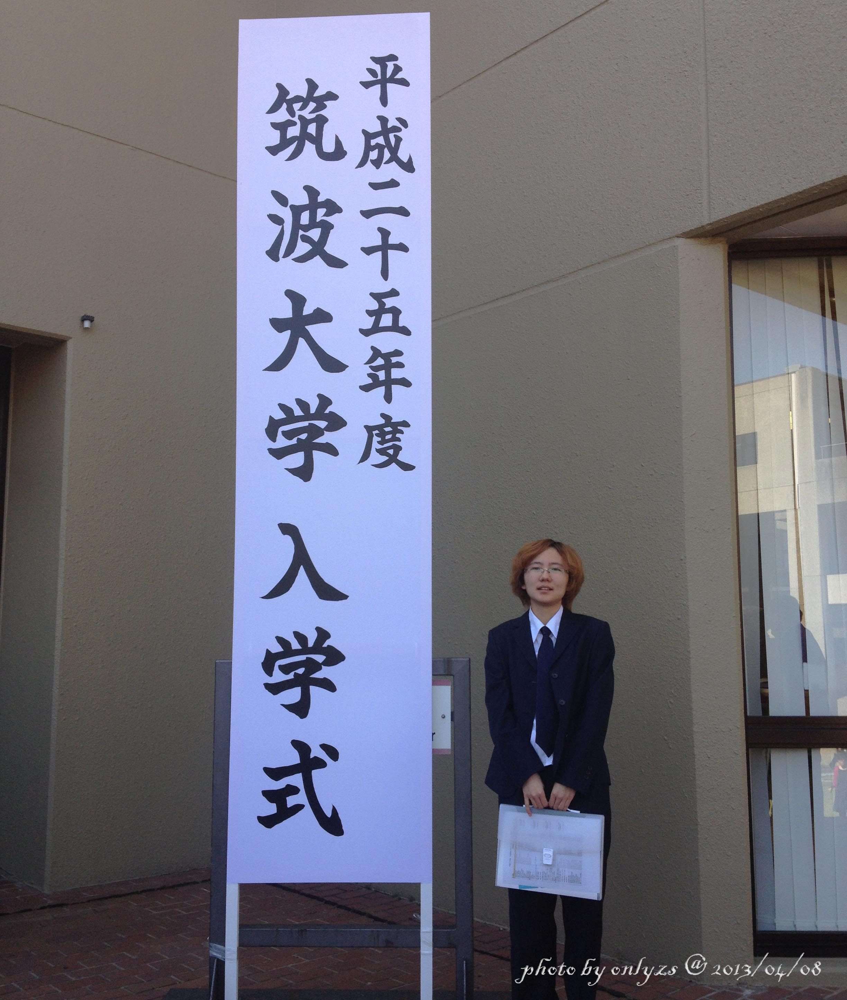
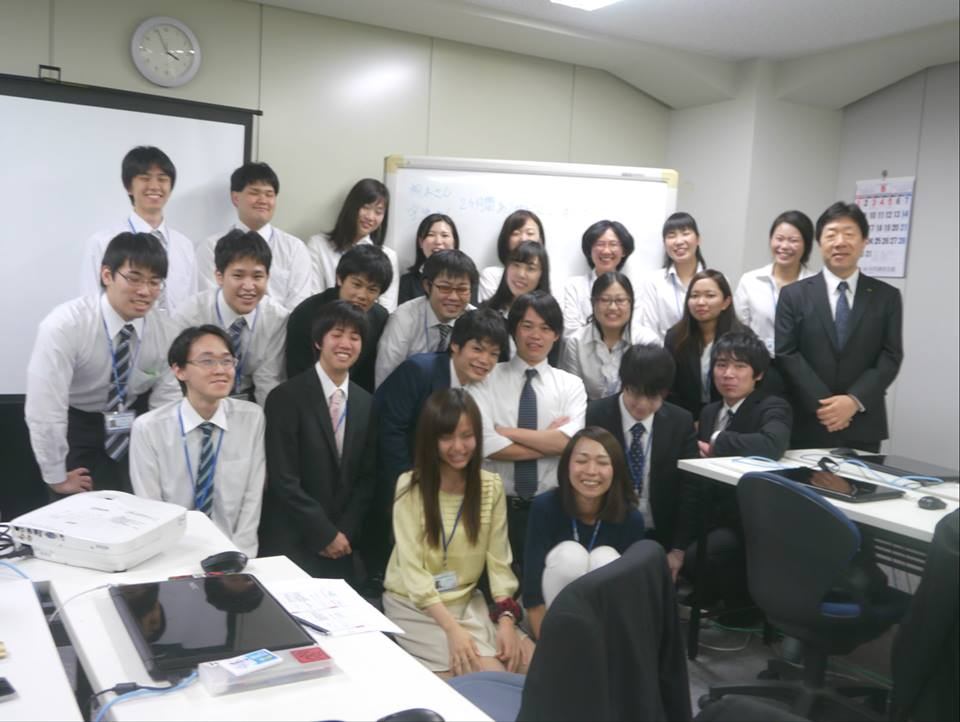

This is a self introduction of SAWAKO
1.Check SNS Accounts


2.History
My Hometown(1989~2008)
Hohhot in Inner Mongolia of China
I had spent my childhood here until I went to University.
My University Life in Shanghai(2008~2012)
I spent 4 years in ECUST @ ShangHai.
The time to leave home...
To GROW UP.
My Life in Tsukuba(2013~2016)
I got my Master's Degree at Tsukuba.
A transformation from a student to an ADULT.
Start to work(2016~)
After 1 year's study to try to get PHD,
I decided to go to work first.
The reason I quit is complicated,
but I swear to get my PHD sometimes in the future.
3.Now
I live at Yokohama, Kanagawa,
And work as a Software Engineer in Tokyo
For some personal reasons,
now I am looking for a new job.
4.Education
Undergraduate Education
As a student marjored in CS,
I had learned Basic Knowledge about computer at
4 years' Undergraduate Education.
And I did some primary research on Neural Network,
Which make me get my Bachelor's Degree.
Master's Degree
During my Graduate Education, I focused on
Image Processing.
And get my Master's Degree
By developing a system which can monitor
plants' growing automatically.
5.Skills
Programming Language
Web Application
Data Science
Projects
Language Skills
TOEIC Listening & Reading 955/990 (2017/03)
TOEFL iBT 82/120 (2010/09)
JLPT N1 (2012/12)
6.Hobby
Mountains
Hiking & Climbing are probably one of
the biggest part of my life.
Almost every weekends in summer,
I spend my time in Mountains.
Challenging The Seven Summits is
my whole life's dream.
Reading
If the weather is bad, I prefer to
spend my weekends at library.
Getting away from the noisy Internet Life
is realy enjoyable.
Drawing
I love drawing all living things in Nature.
By words, I also like Natural History,
Even though I can't even distinguish
a Peach blossom and a Cherry blossom.
Thank you very much to finish reading.
I hope you have knew a little bit of me.
If you have any interests, please contact
Or any SNS account here.